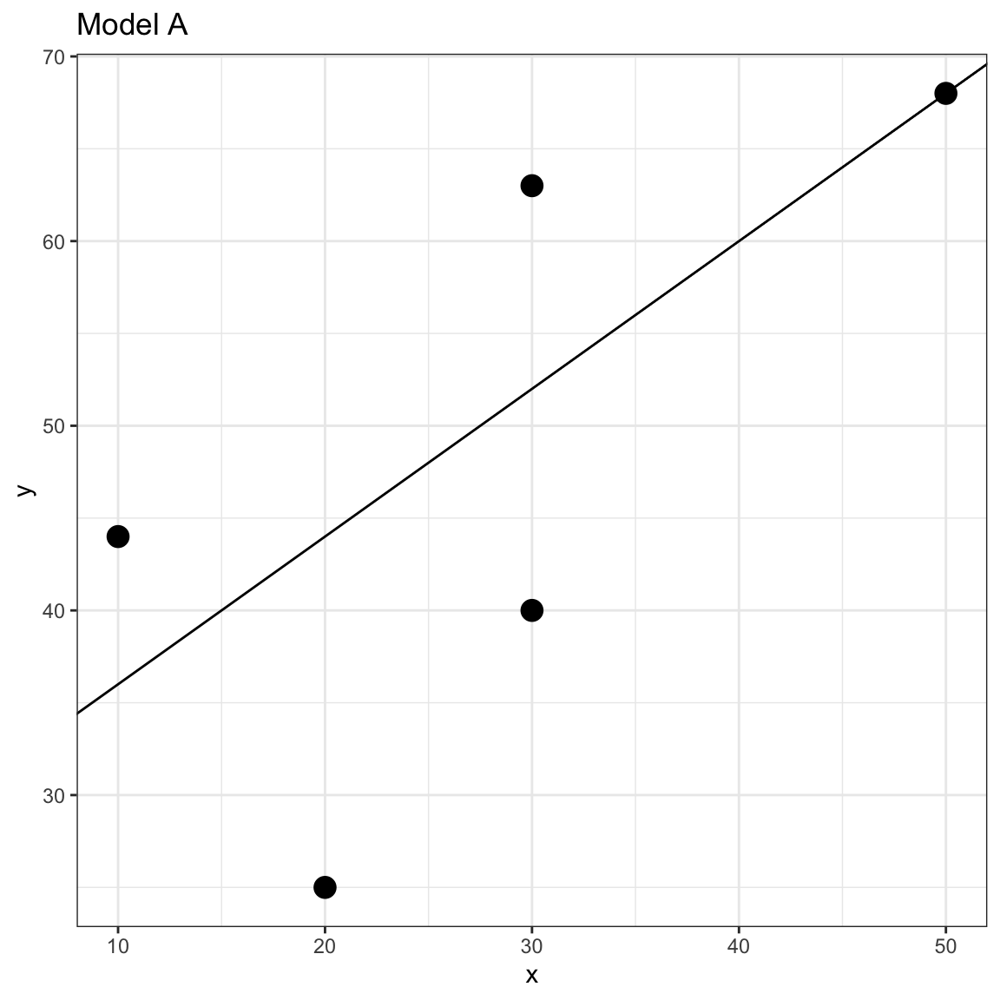
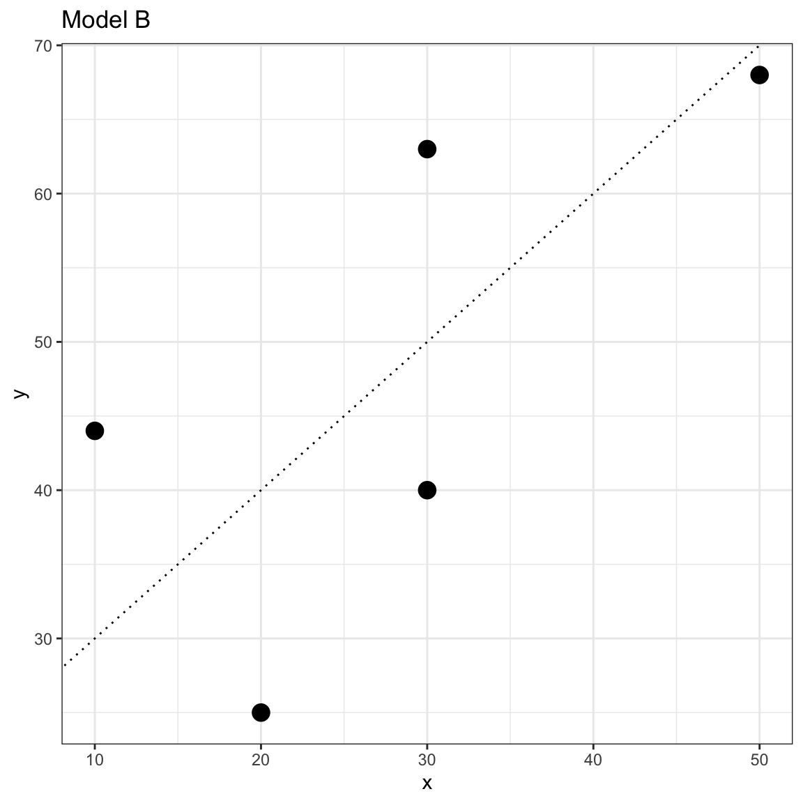
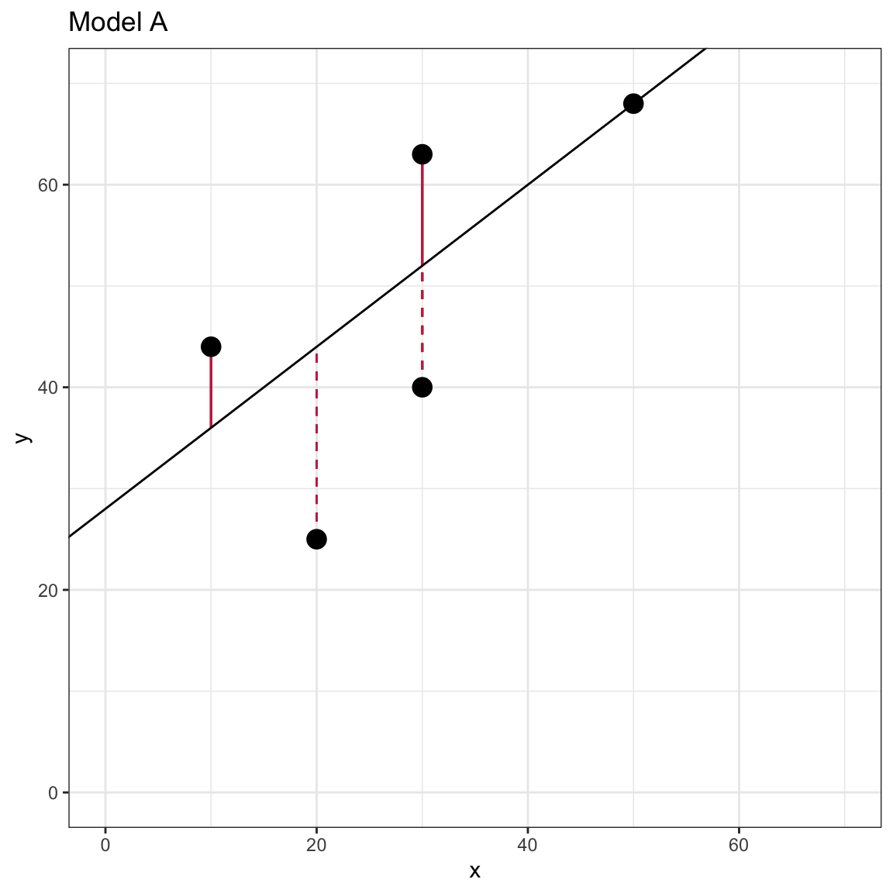
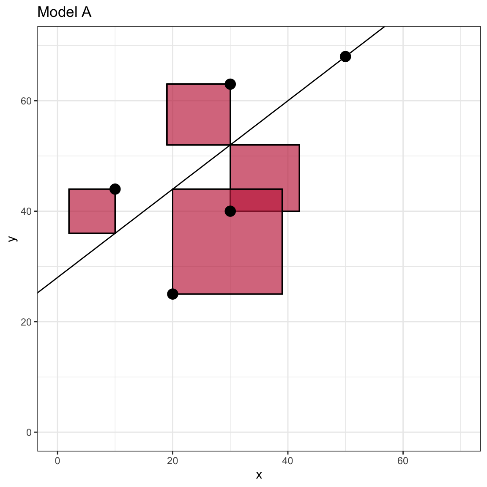
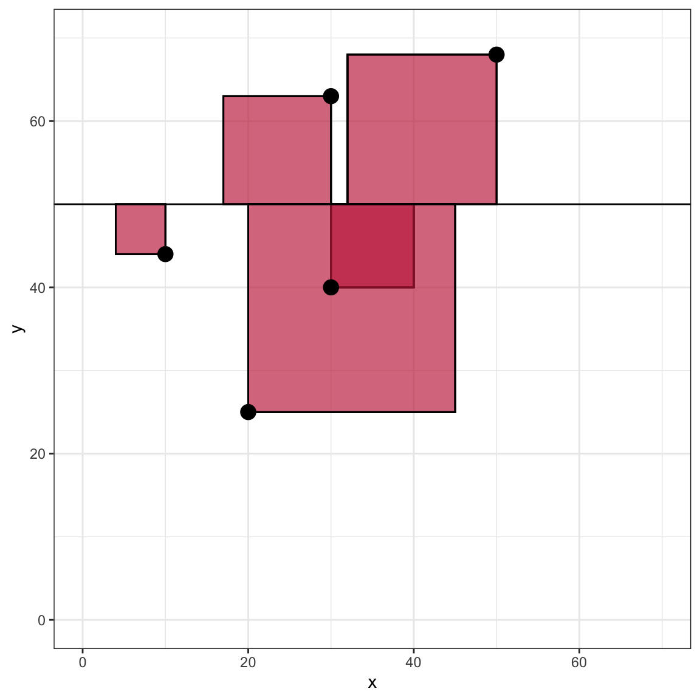
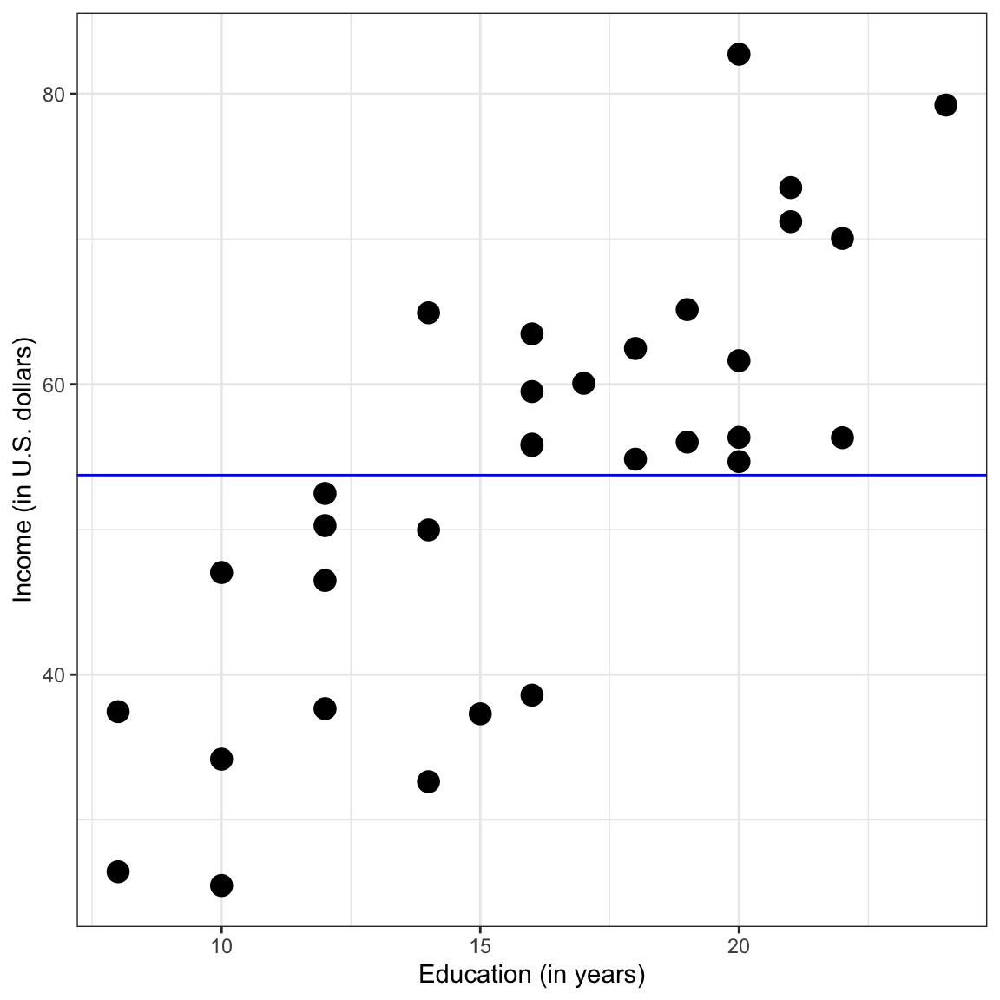

In this set of notes, you will learn how the coefficients from the fitted regression equation are estimated from the data. Recall that in the previous set of notes, we used the riverview.csv data to examine whether education level is related to income (see the data codebook). To begin, we will load several libraries and import the data into an object called city. We will also fit a model by regressing income on education level and storing those results in an object called lm.a.
How does R determine the coefficient values of \(\hat{\beta}_0=11.321\) and \(\hat{\beta}_1=2.651\)? These values are estimated from the data using a method called Ordinary Least Squares (OLS). To understand how OLS works, consider the following toy data set of five observations:
Table 7.1:
Toy data set with predictor (X) and outcome (Y) for five
observations.
Xi
Yi
30
63
10
44
30
40
50
68
20
25
Which of the following two models fits these data better?
Model A:\(~~\hat{Y_i} = 28 + 0.8(X_i)\)
Model B:\(~~\hat{Y_i} = 20 + 1(X_i)\)
We could plot the data and both lines and try to determine which seems to fit better.

Scatterplot of the observed toy data and the OLS fitted regression line for Model A.

Scatterplot of the observed toy data and the OLS fitted regression line for Model B.
7.2 Data–Model Fit
In this case, the lines are similar and it is difficult to make a determination of which fits the data better by eyeballing the two plots. Instead of guessing which model fits better, we can actually quantify the fit for the data by computing the residuals (errors) for each model and then comparing both sets of residuals; larger errors indicate a worse fitting model (i.e., more misfit to the data).
Remember, to compute the residuals, we will first need to compute the predicted value (\(\hat{Y}_i\)) for each of the five observations for both models.
Table 7.2:
Observed values, predicted values and residuals for Model A.
Xi
Yi
Ŷi
ε̂i
30
63
52
11
10
44
36
8
30
40
52
-12
50
68
68
0
20
25
44
-19
Table 7.3:
Observed values, predicted values and residuals for Model B.
Xi
Yi
Ŷi
ε̂i
30
63
50
13
10
44
30
14
30
40
50
-10
50
68
70
-2
20
25
40
-15
Eyeballing the numeric values of the residuals is also problematic. The size of the residuals is similar for both Models. Also, the eyeballing method would be impractical for larger datasets. So, we have to further quantify the model fit (or misfit). The way we do that in practice is to consider the total amount of error across all the observations. Unfortunately, we cannot just sum the residuals to get the total because some of our residuals are negative and some are positive. To alleviate this problem, we first square the residuals, then we sum them.
This is called a sum of squared residuals or sum of squared error (SSE; good name, isn’t it). Computing the squared residuals for Model A and Model B we get:
Table 7.4:
Observed values, predicted values, residuals, and squared residuals
for Model A.
Xi
Yi
Ŷi
ε̂i
ε̂i2
30
63
52
11
121
10
44
36
8
64
30
40
52
-12
144
50
68
68
0
0
20
25
44
-19
361
Table 7.5:
Observed values, predicted values, residuals, and squared residuals
for Model B.
Xi
Yi
Ŷi
ε̂i
ε̂i2
30
63
50
13
169
10
44
30
14
196
30
40
50
-10
100
50
68
70
-2
4
20
25
40
-15
225
Summing these squared values for each model we obtain:
Model A: SSE = 690
Model B: SSE = 694
Once we have quantified the model misfit, we can choose the model that has the least amount of error. Since Model A has a lower SSE than Model B, we would conclude that Model A is the better fitting model to the data.
7.2.1 Visualizing the SSE
To further understand the sum of squared error, we can examine a visual representation of the SSE for Model A. Recall that visually, the residual is the vertical distance between an observation and the fitted value (which lie on the fitted line). The residual indicates how different these two quantities are on the Y-metric. In the formula we squared each of the residuals. Visually, this is equivalent to producing the area of a square that has a side length equal to the absolute value of the residual.

This plot visually displays the residual values as line segments with negative residuals shown as dashed lines.

This plot visually displays the squared residuals as the area of a square with side length equal to the absolute value of the residual.
Figure 7.1: Scatterplot of the observed toy data and the OLS fitted regression line for Model A.
The SSE is simply the total area encompassed by all of the squares. Note that the observation that is directly on the line has a residual of 0 and thus does not contribute a quantity to the SSE. If you computed the SSE for a line with different intercept or slope values, the SSE will be different. The plot below shows what this might look like for the flat line produced by \(~~\hat{Y_i} = 50\).

Scatterplot of the observed toy data and the fitted flat line with Y-intercept of 50. The plot visually shows the squared residuals as the area of a square with side length equal to the absolute value of the residual.
Powell & Lehe (2015) created an interactive website to help understand how the SSE is impacted by changing the intercept or slope of a line. You can also see how individual observations impact the SSE value.
7.3 “Best” Fitting Model
In the vocabulary of statistical estimation, the process we just used to adopt Model A over Model B was composed of two parts:
Quantification of Model Fit: We quantify how well (or not well) the estimated model fits the data; and
Optimization: We find the “best” model based on that quantification. (This boils down to finding the model that produces the biggest or smallest measure of model fit.)
In our example we used the SSE as the quantification of model fit, and then we optimized by selecting the model with the lower SSE. When we use lm() to fit a regression analysis to the data, R needs to consider not just two models like we did in our example, but all potential models (i.e., any intercept and slope). The model coefficients that lm() returns are the “best” in that no other values for intercept or slope would produce a lower SSE. The model returned has the lowest SSE possible thus least squares. For our toy dataset, the model that produces the smallest residuals is
\[
\hat{Y}_i = 28.682 + 8.614(X_i)
\]
This model gives the following predicted values and residuals:
Table 7.6:
Observed values, predicted values, residuals, and squared residuals
for the ‘best’ fitting model.
Xi
Yi
Ŷi
ε̂i
ε̂i2
30
63
49.61364
13.386364
179.1947
10
44
33.47727
10.522727
110.7278
30
40
49.61364
-9.613636
92.4220
50
68
65.75000
2.250000
5.0625
20
25
41.54545
-16.545455
273.7521
The SSE is 661.16. This is the smallest SSE possible for a linear model. Any other value for the slope or intercept would result in a higher SSE.
7.3.1 Mathematical Optimization
Finding the intercept and slope that give the lowest SSE is referred to as an optimization problem in the field of mathematics. Optimization is such an important (and sometimes difficult) problem that there have been several mathematical and computational optimization methods that have been developed over the years. You can read more about mathematical optimization on Wikipedia if you are interested.
One common mathematical method to find the minimum SSE involves calculus. We would write the SSE as a function of\(\beta_0\) and \(\beta_1\), compute the partial derivatives (w.r.t. each of the coefficients), set these equal to zero, and solve to find the values of the coefficients. The lm() function actually uses an optimization method called QR decomposition to obtain the regression coefficients. The actual mechanics and computation of these methods are beyond the scope of this course. We will just trust that the lm() function is doing things correctly in this course.
7.4 Computing the SSE for the Model Fitted to the Riverview Data
Since the regression model is based on the lowest SSE, it is often useful to compute and report the model’s SSE. We can use R to compute the SSE by carrying out the computations underlying the formula for SSE. Recall that the SSE is
From the Riverview data set we have the observed X (education level) and Y (income) values, and from the fitted lm() we have the intercept and slope estimates for the ‘best’ fitting regression model.
# Step 1: Compute the predicted values of Ycity |>mutate(y_hat =11.321+2.651* education )
# Step 2: Compute the residualscity |>mutate(y_hat =11.321+2.651* education,errors = income - y_hat )
# Step 3: Compute the squared residualscity |>mutate(y_hat =11.321+2.651* education,errors = income - y_hat,sq_errors = errors ^2 )
# Step 4: Compute the sum of the squared residualscity |>mutate(y_hat =11.321+2.651* education,errors = income - y_hat,sq_errors = errors ^2 ) |>summarize(SSE =sum(sq_errors) )
The SSE gives us information about the variation in Y (the outcome variable) that is left over (residual) after we fit the regression model. Since the regression model is a function of X, the SSE tells us about the variation in Y that is left over after we remove the variation associated with, or accounted for by X. In our example it tells us about the residual variation in incomes after we account for employee education level.
In practice, we often report the SSE, but we do not interpret the actual value. The value of the SSE is more useful when comparing models. When researchers are considering different models, the SSEs from these models are compared to determine which model produces the least amount of misfit to the data (similar to what we did earlier).
7.4.1 Evaluating the Impact of a Predictor Using SSE
Consider again the general equation for the statistical model that includes a single predictor,
\[
Y_i = \beta_0 + \beta_1(X_i) + \epsilon_i
\]
One way that statisticians evaluate a predictor is to compare a model that includes that predictor to the same model that does not include that predictor. For example, comparing the following two models allows us to evaluate the impact of \(X_i\).
The second model, without the effect of X, is referred to as the intercept-only model. This model implies that the value of Y is not a function of X. In our example it suggests that the mean income is not conditional on education level. The fitted equation,
\[
\hat{Y}_i = \hat{\beta}_0
\]
indicates that the predicted Y would be the same (constant) regardless of what X is. In our example, this would be equivalent to saying that the mean income is the same, regardless of employee education level.
7.4.2 Fitting the Intercept-Only Model
To fit the intercept-only model, we just omit the predictor term on the right-hand side of the lm() formula.
lm.0=lm(income ~1, data = city)lm.0
Call:
lm(formula = income ~ 1, data = city)
Coefficients:
(Intercept)
53.74
The fitted regression equation for the intercept-only model can be written as,
\[
\hat{\mathrm{Income}_i} = 53.742
\]
Graphically, the fitted line is a flat line crossing the \(y\)-axis at 53.742 (see plot below).

Scatterplot of employee incomes versus education levels. The OLS fitted regression line for the intercept-only model is also displayed.
Does the estimate for \(\beta_0\), 53.742, seem familiar? If not, go back to the exploration of the response variable in the Simple Linear Regression—Description chapter. The estimated intercept in the intercept-only model is the marginal mean value of the response variable. This is not a coincidence.
Remember that the regression model estimates the mean. Here, since the model is not a conditional model (no X predictor) the expected value (mean) is the marginal mean.
Plot displaying the OLS fitted regression line for the intercept-only model. Histogram showing the marginal distributon of incomes is also shown.
The model itself does not consider any predictors, so on the plot, the X variable is superfluous; we could just collapse it to its margin. This is why the mean of all the Y values is sometimes referred to as the marginal mean.
Yet another way to think about this is that the model is choosing a single income (\(\hat{\beta}_0\)) to be the predicted income for all the employees. Which value would be a good choice? Remember the lm() function chooses the “best” value for the parameter estimate based on minimizing the sum of squared errors. The marginal mean is the value that minimizes the squared deviations (errors) across all of the observations, regardless of education level. This is one reason the mean is often used as a summary measure of a set of data.
7.4.3 SSE for the Intercept-Only Model
Since the intercept-only model does not include any predictors, the SSE for this model is a quantification of the total variation in the outcome variable. It can be used as a baseline measure of the error variation in the data. Below we compute the SSE for the intercept-only model (if you need to go through the steps one-at-a-time, do so.)
city |>mutate(y_hat =53.742,errors = income - y_hat,sq_errors = errors ^2 ) |>summarize(SSE =sum(sq_errors) )
7.4.4 Proportion Reduction in Error
The SSE for the intercept-only model represents the total amount of variation in the sample incomes. As such we can use it as a baseline for comparing other models that include predictors. For example,
SSE (Intercept-Only): 6566
SSE (w/Education Level Predictor): 2418
Once we account for education in the model, we reduce the SSE. Moreover, since the only difference between the intercept-only model and the predictor model was the inclusion of the effect of education level, any difference in the SSE is attributable to including education in the model. Since the SSE is smaller after we include education level in the model it implies that improving the data–model fit (smaller error).
How much did the amount of error improve? The SSE was reduced by 4148 after including education level in the model. Is this a lot? To answer that question, we typically compute and report this reduction as a proportion of the total variation; called the proportion of the reduction in error, or PRE.
Including education level as a predictor in the model reduced the error by 63.2%.
7.5 Partitioning Variation
Using the SSE terms we can partition the total variation in \(Y\) (the SSE value from the intercept-only model) into two parts: (1) the part that is explained by the model, and (2) the part that remains unexplained. The unexplained variation is just the SSE from the regression model that includes \(X\); remember it is residual variation. Here is the partitioning of the variation in income.
Each of these three terms is a sum of squares (SS). The first is referred to as the total sum of squares, as it represents the total amount of variation in \(Y\). The second term is commmonly called the model sum of squares (or, regression sum of squares), as it represents the variation explained by the model. The last term is the error sum of squares (or, residual sum of squares) as it represents the left-over variation that is unexplained by the model.
It is often convenient to express these values as proportions of the total variation. To do this we can divide each term in the partitioning by the total sum of squares.
The first term on the right-hand side of the equation, \(\frac{\mathrm{SS_{\mathrm{Model}}}}{\mathrm{SS_{\mathrm{Total}}}}\), is 0.632. This is the PRE value we computed earlier. Since the \(\mathrm{SS_{\mathrm{Model}}}\) represents the model-explained variation, many researchers interpret this value as the percentage of variation explained or accounted for by the model. They might say,
The model accounts for 63.2% of the variation in incomes.
Since the only predictor in the model is education level, an alternative interpretation of this value is,
Differences in education level account for 63.2% of the variation in incomes.
Better models explain more variation in the outcome. They also have small errors. Aside from conceptually making some sense, this is also shown in the mathematics of the partitioning of variation.
Since the denominator is the same on both terms, and the sum of the two terms must be one, this implies that the smaller the amount of error, the smaller the last term (proportion of unexplained variation ) must be and the larger the first term (the proportion of explained variation) has to be.
7.5.2 R-Squared
Another way to think about measuring the quality of a model is that ‘good’ models should reproduce the observed outcomes, after all they explain variation in the outcome. How well do the fitted (predicted) values from our model match wih the outcome values? To find out, we can compute the correlation between the model fitted values and the observed outcome values. To compute a correlation, we will use the correlate() function from the {corrr} package.
# Load librarylibrary(corrr)# Create fitted values and correlate them with the outcomecity |>mutate(y_hat =11.321+2.651*education ) |>select(y_hat, income) |>correlate()
The correlation between the observed and fitted values is 0.795. This is a high correlation indicating that the model fitted values and the observed values are similar. We denote this value using the uppercase Roman letter \(R\).
\[
R = 0.795
\]
Now square this value.
\[
R^2 = 0.795^2 = 0.632
\]
Again we get the PRE value! All three ways of expressing this metric of model quality are equivalent:
Although these indices seem to measure different aspects of model quality—reduction in error variation, model explained variation, and alignment of the model fitted and observed values—with OLS fitted linear models, these values are all equal. This will not necessarily be true when we estimate model parameters using a different estimation method (e.g., maximum likelihood). Most of the time this value will be reported in applied research as \(R^2\), but as you can see, there are many interpretations of this value under the OLS framework.
7.5.3 Back to Partitioning
Using the fact that \(R^2 = \frac{\mathrm{SS_{\mathrm{Model}}}}{\mathrm{SS_{\mathrm{Total}}}}\), we can substitute this into the partitioning equation from earlier.
This suggests that the last term in the partititoning, \(\frac{\mathrm{SS_{\mathrm{Error}}}}{\mathrm{SS_{\mathrm{Total}}}}\) is simply the difference between 1 and \(R^2\). In our example,
\(R^2 = 0.632\), and
\(1 - R^2 = 0.368\)
Remember that one interpretation of \(R^2\) is that 63.2% of the variation in incomes was explained by the model. Alternatively, 36.8% of the variation in income is not explained by the model; it is residual variation. If the unexplained variation is too large, it suggests to an applied analyst that she could include additional predictors in the model. We will explore this in future chapters.
For now, recognize that OLS estimation gives us the ‘best’ model in terms of minimizing the sum of squared residuals, which in turn maximizes the explained variation. But, the ‘best’ model may not be a ‘good’ model. One way to measure the quality of the model is through the metric of \(R^2\). Understanding whether \(R^2\) is large or small is based on the domain science. For example in some areas of educational research, an \(R^2\) of 0.4 might indicate a really great model, whereas the same \(R^2\) of 0.4 in some areas of biological research might be quite small and indicate a poor model.